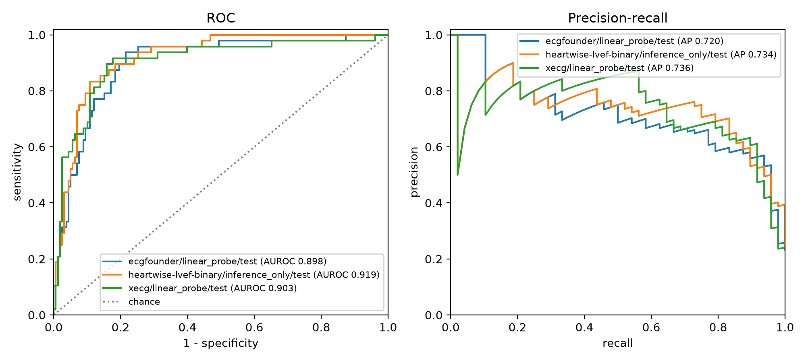
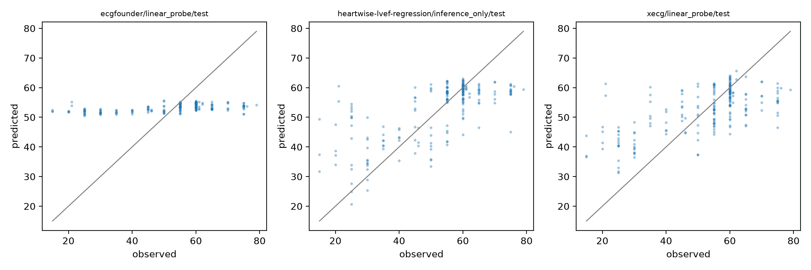

HeartWise LVEF ×2 · ECGFounder · xECG · MI-CDM (MIMIC-IV) · 2026-09-22
병원 밖에서 만들어진 ECG 모델이 우리 환자에서 얼마나 맞는지는 돌려 보기 전에는 알 수 없습니다. 그런데 모델마다 입력 형식, 런타임, 출력이 달라서 비교 가능한 조건으로 돌리는 것 자체가 일입니다.
--input이고, 그 파일의 체크섬이 다음 실행의 config_hash에 들어갑니다.| heartwise-lvef-binary | heartwise-lvef-regression | ecgfounder | xecg | |
|---|---|---|---|---|
| 종류 | single-task, LVEF ≤ 40 | single-task, LVEF % | foundation (Net1D) | foundation (xLSTM) |
| runtime | torch 2.13 / Py 3.10 · envs/ecgfounder |
torch 2.8 / Py 3.12 · envs/xecgsLSTM CUDA 확장 빌드 필요 | ||
| sampling_rate | 250 Hz | 250 Hz | 500 Hz | 100 Hz |
| layout / gain | lead_time · gain 208.33 | lead_time · gain 208.33 | lead_time | time_lead |
| scaling | none | none | global_zscore | none |
| weights_format | jit (TorchScript) | checkpoint + builder | checkpoint + builder | safetensors + builder |
| output | logits 1, positive_index 0 | regression 1, unit % | logits 150, positive_index null | features만, head 없음 |
| feature_layer | null | null | backbone (1024) | pooled (1024) |
| training_modes | inference_only | inference_only | linear_probe · partial · full | linear_probe · partial · full |
| pretraining_corpora | mhi | mhi | harvard-emory-ecg | (MIMIC 미포함) |
1/0.0048 이득을 gain으로 선언합니다. 이 차이는 전부 카드에 있고 코드에는 없습니다.| 단계 | 건수 |
|---|---|
cdm.image_occurrence 전체 | 1,011,623 |
ECG만 (modality_concept_id 4145308) CXR 215,006 제외 | 796,617 |
| ±7일 안에 LVEF 측정 있음 | 182,960 |
LVEF < 5% 제외 (label_implausible) | −33 |
| 코호트 ECG / 환자 | 182,927 / 44,179 |
LVEF ≤ 40 양성 (label_primary) | 44,056 (24.1%) |
DICOM 파일 없음 (file_missing) | 0 |
image_occurrence → S3 DICOM 800,035파일 99 GB를 서버 /scratch에 캐시.measurement로 적재한 147,431행(concept 3027172, LOINC 10230-1). ECG와 person_id + 날짜로만 연결.| split | 환자 | ECG | 양성 ECG |
|---|---|---|---|
| dev (5-fold) | 35,343 | 146,757 | 35,383 |
| test | 8,836 | 36,170 | 8,673 |
사람 단위 split · label_primary로 층화 · gate min_test_positives 100 통과 | |||
| 1,000건 샘플 | 샘플 | 전체 |
|---|---|---|
| 선택 기준 | cohort_index 앞 1,000행 | |
| 환자 | 272 | 44,179 |
| 양성률 | 19.6% | 24.1% |
| LVEF 중앙값 | 55 | 55 |
| dev / test | 794 / 206 | 146,757 / 36,170 |
image_occurrence_id가 가장 작은 1,000건입니다. 무작위도 층화도 아닙니다. 목적은 6단계가 실제 데이터로 끝까지 도는가였고, 뒤에 나오는 수치는 성능 추정치가 아닙니다.cohort_split을 그대로 조인했으므로 dev/test 누수는 없습니다.| recipe | 모델 | resample | gain | normalize | tensor |
|---|---|---|---|---|---|
| 2d6a8aa97aa5 | heartwise-binary, heartwise-regression (공유) | 500 → 250 Hz | ×208.33 | none | (12, 2500) |
| 84dfe265782c | ecgfounder | 500 Hz 그대로 | 없음 | global_zscore | (12, 5000) |
| … | xecg | 500 → 100 Hz | 없음 | none | (1000, 12) |
| … | prophecg-stemi (registry에 있어 함께 컴파일, arm 없음) | 500 Hz | 없음 | none · 8유도만 | (8, 5000) |
loader: dicom), 카드 계약대로 recipe를 컴파일합니다. 같은 계약이면 recipe를 공유하므로 모델 5개에 recipe 4개, 1,000건에서 제외 0건.runtime.env가 둘이라 models를 env마다 한 번씩 돌리고 manifest를 따로 남겼습니다(ecgfounder env 46초, xecg env 72초, 1,000건). 첫 실행에서 상대 경로 버그(A-10) 하나를 찾아 고쳤습니다.| heartwise | ecgfounder probe | xecg probe | |
|---|---|---|---|
| AUROC | 0.919 0.844–0.972 | 0.898 0.802–0.961 | 0.903 0.803–0.974 |
| AUPRC | 0.734 | 0.720 | 0.736 |
| sens / spec @refit_sens95 | 1.000 / 0.399 | 0.979 / 0.259 | 0.958 / 0.405 |
| brier | 0.120 | 0.110 | 0.101 |
| calibration slope | 2.12 | 1.68 | 1.06 |
| CITL | +0.06 | −0.03 | −0.06 |

| heartwise | ecgfounder probe | xecg probe | |
|---|---|---|---|
| MAE | 7.77 5.83–10.22 | 10.97 8.85–13.63 | 8.92 |
| RMSE | 10.94 | 14.42 | 11.62 |
| R² | 0.470 | 0.080 | 0.402 |
| AUROC@40 예측값을 40으로 잘라 | 0.912 | 0.894 | 0.885 |

label_def: value 하나로 들어갑니다. 예측 파일의 pred_value 열, 지표 범주의 MAE·RMSE·R², 그리고 regression_cuts: [40]이 회귀 예측을 분류 지표로도 읽어 줍니다.refit_sens95(민감도 95% 보장)라 오분류는 거의 전부 FP입니다. FN은 세 모델 통틀어 3건이고 전부 LVEF 21인 같은 환자입니다. 리뷰 1순위.type: residual이 필요합니다(L1 후보). verdict 어휘가 아직 STEMI용(stemi_mimic, reperfused)인 것도 study별로 열어야 합니다(L0).label_sens2(±30일)가 지금 구조에서 label_primary와 항상 같아지는 문제(A-9), 그리고 perturbation 열화 격자를 카드별로 둘지(L2).site만 바꿔서. MIMIC에서만 맞던 가정이 있으면 거기서 드러납니다.기록: docs/operations/lvef-first-run.md · docs/decisions/adaptations.md (A-7 ~ A-10, L2-5, L2-6) · docs/plans/2026-09-22-lvef-results-deck-plan.md